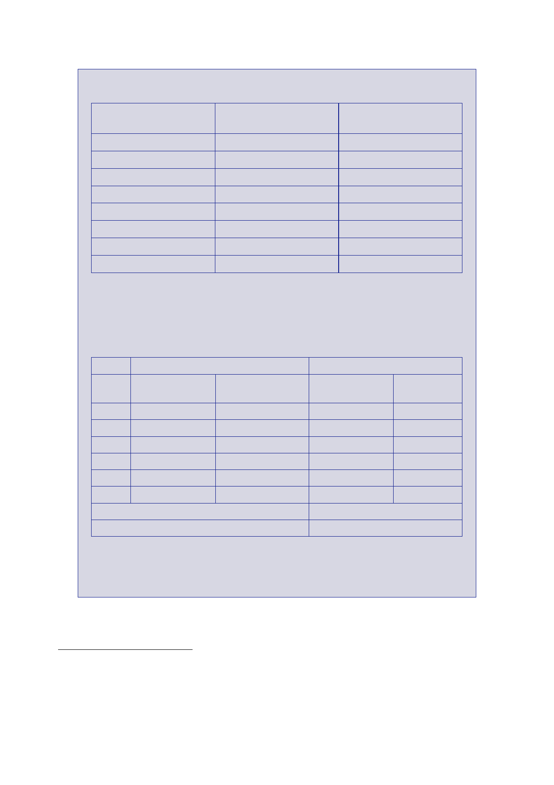

The Report
of the Iraq Inquiry
IRRF2
ISFF Fiscal
Year
2005
2006
2007
2008
2009
Total
Amount
allocated
(US$bn)
4.94
Amount
spent
(US$bn)
4.89
5.49
3.01
5.54
3.00
1.00
22.98
5.34
2.73
5.00
1.92
0.1 (in
year figure)
19.98
The Iraqi
Government funded SSR predominantly through budgetary allocations
to the
Ministries
of Defence and Interior.516
The annual
allocations and spends between 2005
and 2009
are shown in Table 5.
IMOD
Amount
allocated
(US$bn)
Amount
spent
(US$bn)
2005
1.3
1.1
2006
3.4
1.3
2007
4.1
2.3
2008
5.3
3.4
2009
3.9
3.7
Total 18.0
11.8
Total
allocation across ministries 2005 ‑ 2009
Total spend
across ministries 2005 ‑ 2009
MOI
Amount
allocated Amount spent
(US$bn)
(US$bn)
1.1
0.9
2.0
1.6
3.2
3.1
5.7
4.2
5.5
5.0
17.5
14.8
35.5
26.6
In
addition, the Iraqi Government between 2006 and 2009 set aside
US$5.5bn to
purchase
equipment, training and services through the US’ Foreign Military
Sales517
programme.
516
Report to
Congress US Government Accountability Office, September 2010,
‘Iraqi‑US Cost‑Sharing’.
517
The US
Foreign Military Sales programme involved the Iraqi Government
identifying what needed to be
procured,
and transferring appropriate funds to the Federal Reserve Bank. The
US would then oversee
the
spending.
180